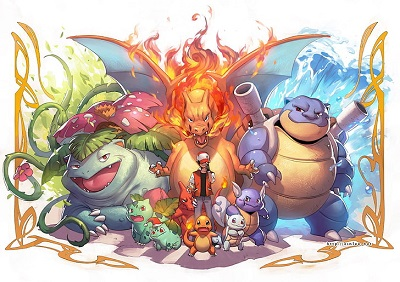

During this SAE, we created an interactive site on the theme of Pokémon!
This choice was carefully considered by the 3 members of the Odonata group. Pokémon having cradled their
childhoods, the choice of this subject seemed obvious to them.
→ What is Pokémon ?
Pokémon are creatures with special abilities. They are mainly related to elemental powers like water, fire, earth
or wind. But there are many other abilities such as the dragon, the electrik or the ground. These abilities are
called types and define what a Pokemon is capable of.
→ What do we want to do for this SAE ?
Pokémon are creatures with special abilities. They are mainly related to elemental powers
like water,
fire, earth or wind. But there are many other abilities such as the dragon, the electrik or the ground. These
abilities are called types and define what a Pokemon is capable of.
→ And data ?
We took a more strategy-centric approach, so we focused more on Pokemon stats. We naturally
came up with the idea
of comparing each type to see which would be the best in each stat. This information would be crucial to form a
strategic pokemon team based on a certain stat. We also decided to compare all the overall generation (game) stats
of Pokemon to see the power increase between them. It would also be useful to see it in order to choose Pokemon
from
the best generation (game) possible.
→ So the dynamic website ?
With all the information we gathered and thinked of we chose two possible representations.
The first being a
radar chart for each pokemon type showing the average stats in HP, attack, defense, Spe Attack, Spe Defense, and
Speed. Then after we will make another radar chart showing this time which type is the best in which stat. And
finally we will propose a global radar chart regrouping all average stats per type to make it easier to compare.
See more

Finally, we make another page showing pokemon type strengths and weaknesses. We show this
with a table. It is
possible to choose the types by clicking on their icons and a table appears indicating which are the weaknesses of
the chosen types and the strong points.
And another row in the chart will show that it is strong against Fire, Poison, Steel, Electric, and Rock types.
See more
And, we offer a pokemon search system, by name and id, a bit like a pokédex with additional
information. Such as
the statistics of the desired pokemon written and in the form of a diagram, images in its normal and shiny form,
its
weight, its size and finally its type.
See more